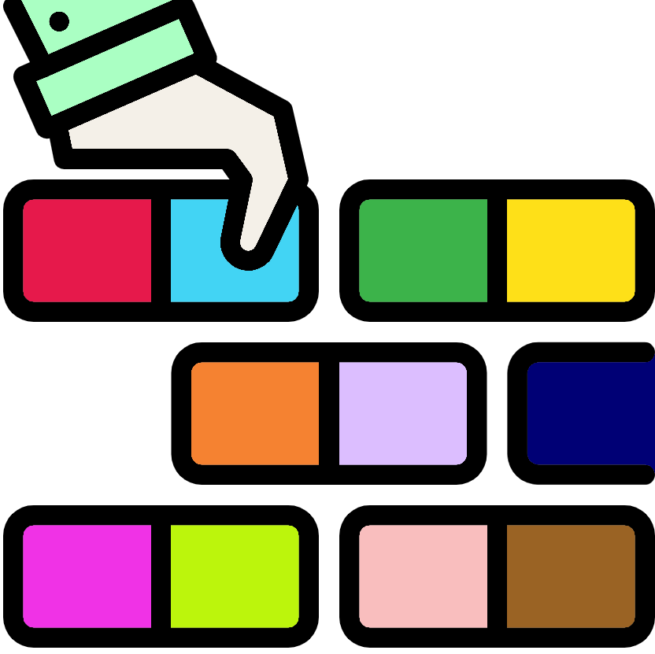
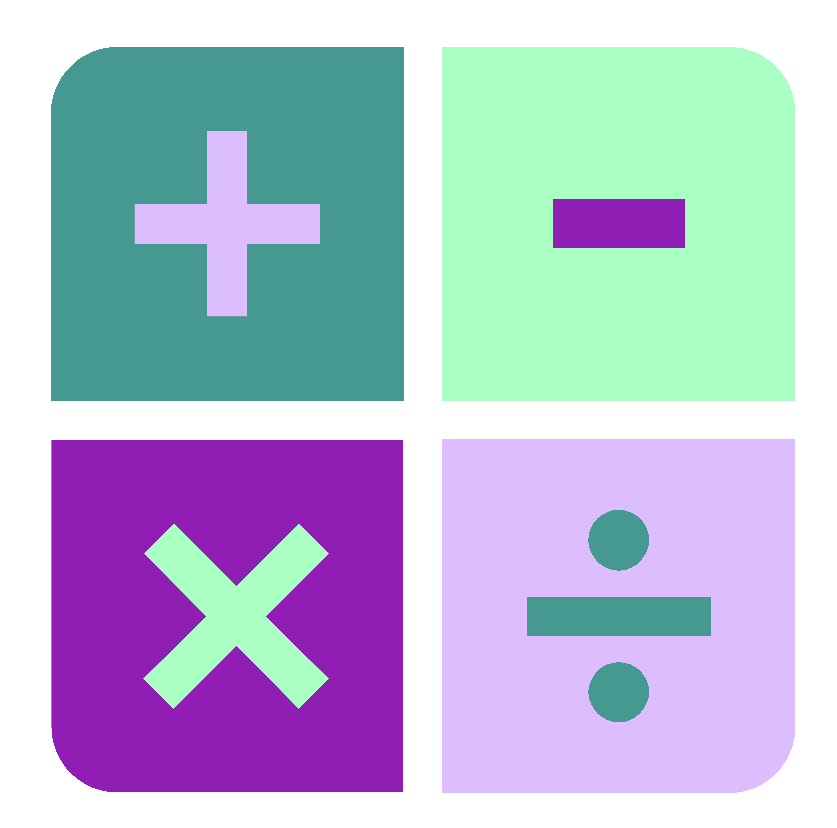
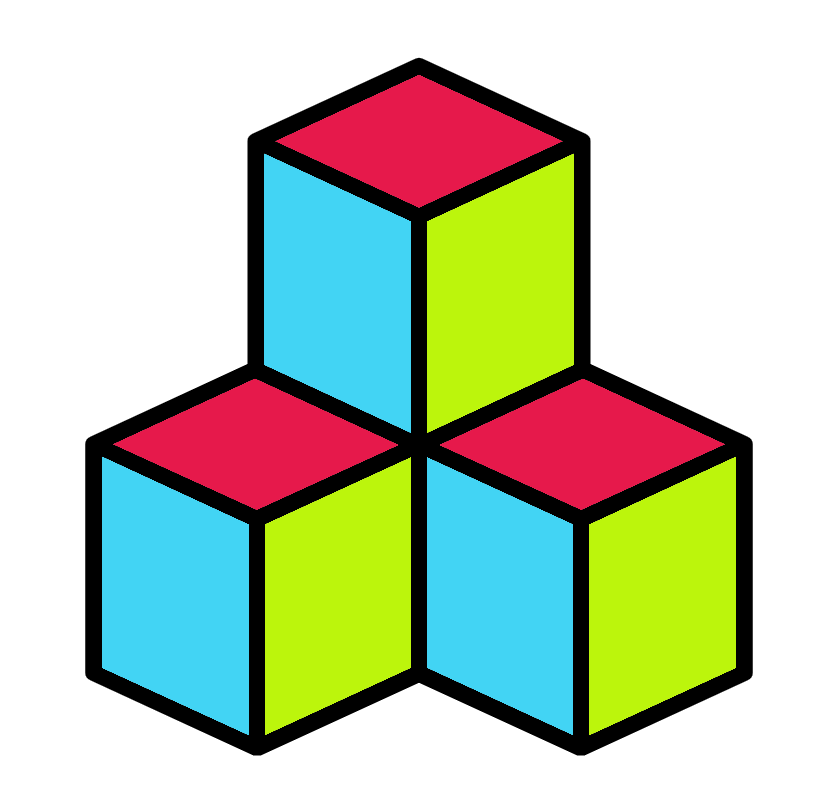
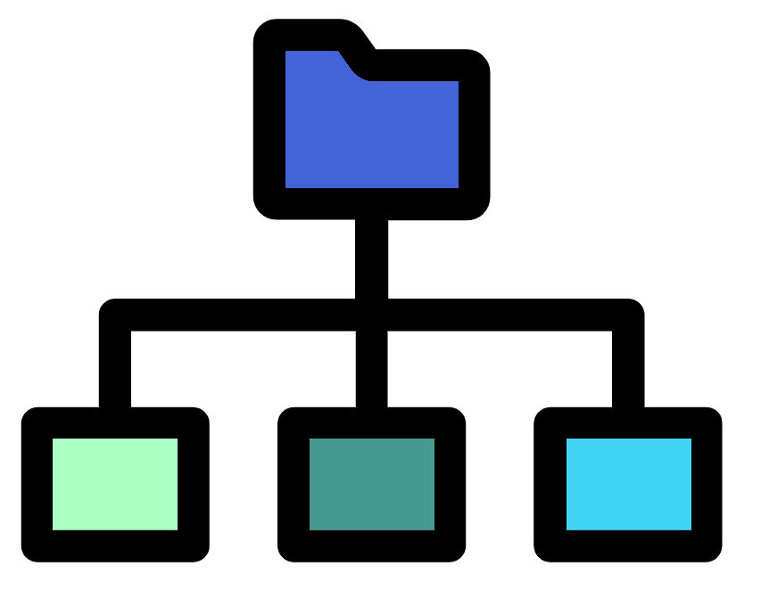
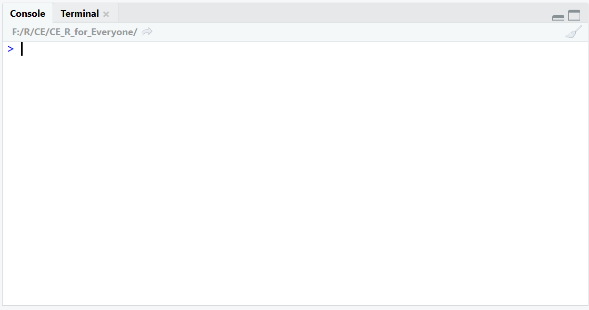
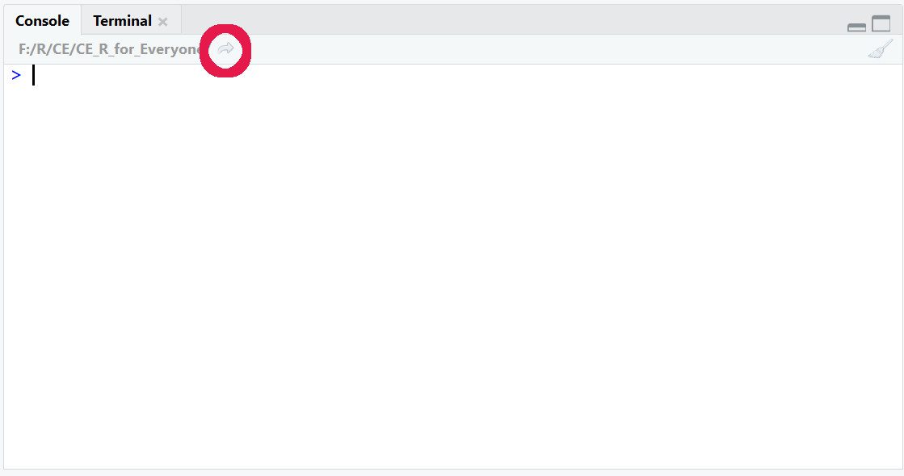
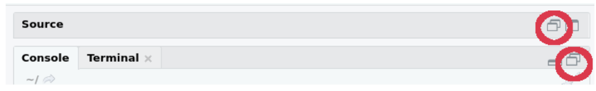
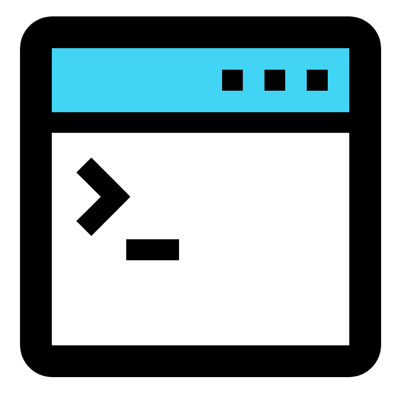
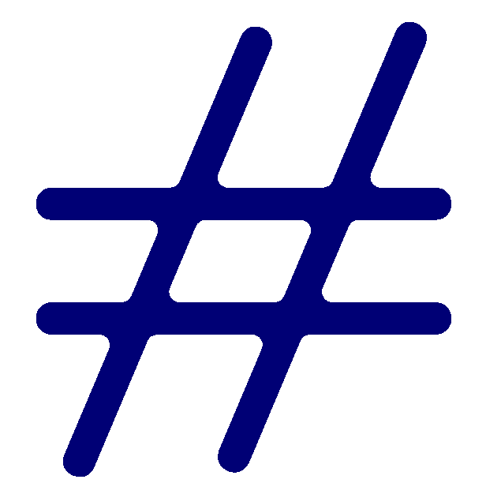
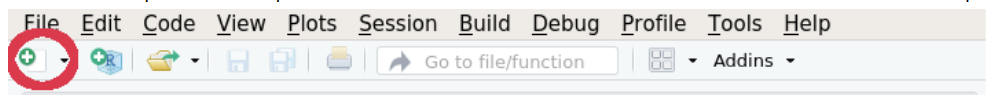

2+2
7-7
10/5
3*3
6+2+4
8-1-3(PART*) Foundations
Foundations of R

This section will cover the foundations of R. Understanding these concepts is fundamental to becoming an R user. The section will start with operators, these include +, -, *, and /, they allow us to use R like a calculator. Then we will look at variables. Variables allow us to save the output from commands so we can use it in future commands.
A lot of the power of R comes from the vast array of functions it contains. We will therefore look at some useful functions to see how they work. Additionally, we’ll look at how to interact with directories in R.
The section will end showing you some ways to use RStudio and the script editor.
Operators

Operators are symbols in R that allow you to carry out many common tasks. The 3 main types of operators in R are arithmetic, logical, and bitwise. We will ignore logical and bitwise and have a look at some arithmetic operators.
The four most commonly used arithmetic operators are:
+: Addition-: Minus/: Divide*: Multiply
Run the following commands in your RStudio console.
Note: Each line below represents one command. Once a command is typed out press enter to run the command.
Note: The amount of space between the integers/numbers and an operator does not matter. It is a matter of preference and clarity.
R follows the BODMAS rules (Brackets, Orders (powers/roots), Division, Multiplication, Addition, Subtraction). Try out the following commands to demonstrate the usefulness of brackets.
3 + 2 * 2/5
((3+2) * 2) / 5
3 - 2*4 + 1
(3-2) * (4+1)
3 * 3/2 * 2 - 1
(3*3) / ((2*2) - 1)When entering commands via the console the results/output is printed to the screen (ignore the [1] at the moment). However, this is no better than a normal calculator currently. R is a lot more powerful as we shall see.
Variables

The output/result of a command can be saved as a variable. Below is the format for creating a variable in R (don’t type this into R).
variable_name <- variable_objectThere are 3 parts to the above:
- The variable name (
variable_name). This is the name of the variable and is what will be used to refer to the variable in future commands. This name can be almost anything. There are some rules on what can be in a name:- Must start with a letter.
- Cannot contain spaces.
- Cannot start with a number.
- Cannot share the same name as a command or function in R.
- They are case sensitive. The variable name
BBis different to the variable namebbwhich is different again tobB. I find it easiest to keep variable names in lower case.
<-is called the assignment operator. It assigns the variable object to the variable name.- Tip you can press ‘ALT’+ ‘-’ after a variable name as a shortcut for the assignment operator.
- The variable object (
variable_object). This can be many different objects including the output/results from commands, strings/words, numbers, and many other R data types.
A variable can be thought of as a box. The variable object is held in the box but it can be replaced with any other object. The variable name can then be thought as the label on the box so you can tell which box is which.
Type the below commands into the RStudio console.
Note. Remember the amount of spaces between operators and integers does not matter. I encourage you to experiment with this spacing so you find what is best for you in terms of ease and clarity.
bakers_dozen <- 13
kilobyte <- 1024
I <- 1
II <- I + 1
V <- 7 - II
X <- (II / I) * V
L <- X * VIn the above commands the variables are not printed out to the screen, this is as it should be. The variables are appearing in the environment pane (Top right). This is very convenient to see what variables are currently in the environment and to see what they contain.
To print the contents of a variable to screen you can type the variable name into the console and press enter. This will print the variable object to the screen. This is not needed for small variable objects, for which you can look at the environment pane, but is useful for larger variable objects.
Functions
R Functions allow the user to carry out specific tasks. R has many inbuilt functions but you can also create your own. Currently we will look at inbuilt functions.
The basic layout of a function is:
function_name(objects, options)There are 3 main parts to the above:
- The function name (
function_name) - The object/s to provide to the function.
- This can be numbers, strings, variables we have created etc.
- Most functions require at least one object.
- Some functions can take multiple objects, if multiple objects are provided they must be separated by
,.
- Function options (
options). Options can be provided to some functions to alter the way they will work.- Some functions don’t have options.
- Most options have default modes. If the options is not specified the default mode will be used.
- Like objects, when using multiple options they must be separated by
,.
Try running the below commands in your Rstudio console.
ceiling(3.5)
floor(3.5)
sqrt(9)
round(3.5555, digits = 2)
round(3.5555, digits = 3)
round(3.5555, digits = 0)
two <- sqrt(4)The help page of functions can be accessed in 2 main ways:
- Click on the function name so your cursor is in it and press F1.
- Type
?followed by the function name. Example below:
?ceilingDirectories

It is important to know what directory you are working in and how to change to different directories.
Commands
Below are commands you can run in the RStudio console or script editor (use of script editor will be taught soon).
- Determine what directory you are currently in:
getwd()- Set working directory. The path of the directory must be in quotes like below. If you do run the below command make sure the path exists in your computer, as I am sure the example below will not.
setwd("/path/of/directory")- List the files in the current directory:
list.files()RStudio Interface
The RStudio interface can also be used to carry out the above tasks.
To see what the current working directory is, you can look at the top bar of the console window. The below shows I am in the “F:/R/CE/CE_R_for_Everyone” directory.

There are two main ways to set your working directory.
- Via the tool bar:
- Click “Session”
- Go to the “Set Working Directory” drop down section
- Click “Choose Directory..”
- Use the pop-up browser to choose a directory
- Via the MISC window (bottom right)
- Click the Files pane
- Navigate to the directory you would like to set as the working directory
- On the MISC toolbar click on the cog icon (It may say “More” beside it)
- On the drop down click “Set As Working Directory”
To show the current working directory in the Files pane click the arrow on the top bar of the console window. You can then see what files and directories are in your working directory via the Files pane in the MISC window.

With this information create a directory you will use for this course. This can be done outside of Rstudio or you can use the Files pane in the MISC window. Once this is created set your working directory to it. With that done we can go onto the next section.
Script editor
You can quickly type and run code using the console window. However, to fully utilise Rstudio we will instead use the script editor in the source window. This allows us to reuse and edit code easier, and to save our code so we can come back to it.
If you cannot see your script editor, click the multi window button on the top of the source window or console window.

Type the below into the script editor and press “enter”.
2 + 2Pressing enter goes to a new line without running the command, just like other text editors (word, emails etc.).
On the new line type the below:
4 - 1Running commands

You can run a command that is in the script editor by one of the two following ways:
- Via cursor:
- Move the cursor to the line you would like to run.
- Press “Ctrl” + “enter” ( “cmd” + “enter” for Mac)
- Highlighting:
- Highlight the parts you would like and press “Ctrl” + “enter” ( “cmd” + “enter” for Mac)
- You can highlight a part of a line, a whole line, and even multiple lines.
Run the commands you currently have in your script editor.
The script editor is unaffected with only the cursor moving if you used the cursor method. What is actually happening is that your commands are being copied to the console window and are being run there.
I would encourage to primarily use the script editor to write your code. It is brilliant for editing, reusing, and documenting your code.
Annotations

Annotations can be added to your code in the script editor. If a line starts with a # it will not be run as a command, this line is then an annotation. This is extremely useful to leave information for your future self. It is much harder to go back to old code and figure out what it does if it is just code.
Be a mate, annotate.
Edit the contents of your script editor so it looks like the below. Then run all the lines.
Tip: If you have selected the script editor you can use “Ctrl” + “a” to highlight all.
#Command 1
2 + 2
#Command 2
4 - 1Saving scripts
Finally, one of the best aspects of using the script editor is that you can save your scripts. I use this so I can have scripts for specific projects and template scripts for certain tasks I routinely carry out.
- To save a script you can click the floppy disk on the toolbar of the source window.
- To save as, go to the RStudio toolbar and click “File” > “Save As…”.
Open a saved script
You can open a previously saved script in 2 main ways:
- Via the Files pane in the MISC window
- Navigate to the directory with the script (you do not need to set the working directory to this directory)
- Click the name of the script you would like to open
- Via the Rstudio toolbar
- Click “File”
- Click “Open file”
- With the popup browser navigate to the location of the script and open it
New script
You can have multiple scripts open at one time and switch between these scripts with the tabs at the top of the script editor window.
To create and open a new script, click on the button on the RStudio toolbar shown below and select “R script”.

Foundations MCQs
Splendid! This chapter covered the foundations of R including operators, variables, and functions.
Try choosing the correct option in the below sentences to recap what you have learnt.
- ________ are symbols that allow you to carry out common R tasks such as addition and multiplication.
- Hash tags (
#) can be used to create human readable ________
- ________ can be assigned as R Variables
- The assignment operator is: ________
sqrtis a R ________
- You can run commands in the ________